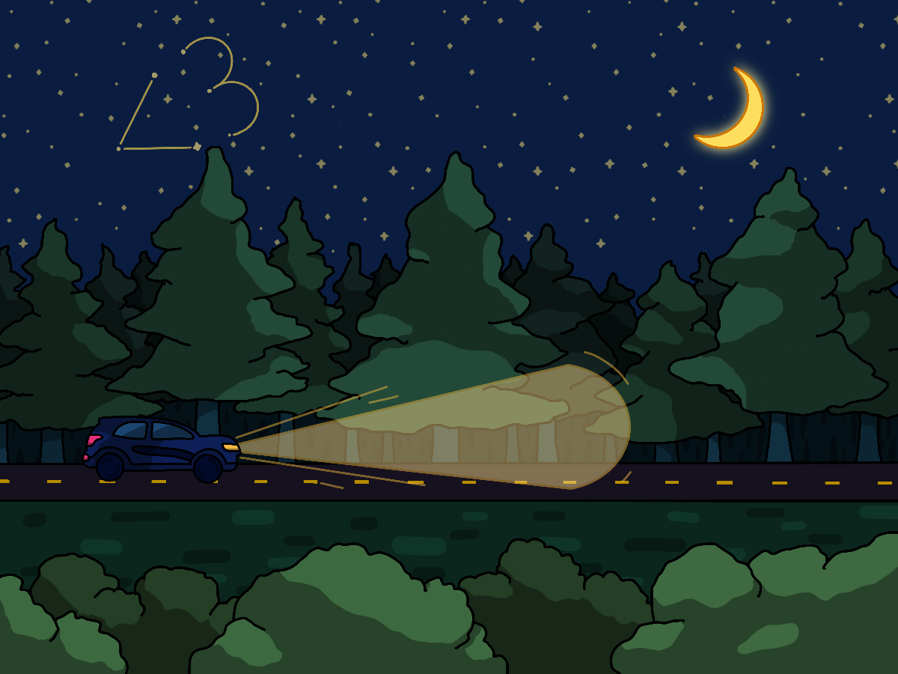
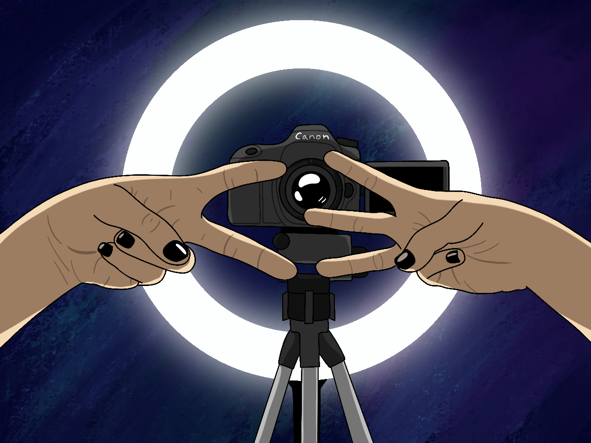

This was the high school I went to before moving to NJ. There was a math teacher who not only taught me Algebra, but she was also my coach, friend, and mentor. On the note I wrote for her, I said at the end, "If there's anything I learned in class, it's that everything is <3."
Moving day. During the whole road trip, all I could think about was the friends I’d be leaving behind and whether or not I’d be able to make new friends at a new school.
Over the summer, besides talking to my friends back home, I’d make YouTube videos as a hobby. A few weeks in, I decided to start saying “everything is <3” as my outro, and I’ve said it ever since.
After two years of making videos, I reached 100,000 subscribers! I had a community on the internet, and they started to pick up on the meaning behind the phrase. It was nice to know I could spread some positivity online even though I wasn’t happy at home.
After working with a company for a few months, I was finally able to release merchandise for the first time. Of course one of the first designs I thought of was the phrase in my handwriting so people could have sometime more meaningful than weekly videos.
So this phrase all started between my math teacher and me. It became my mantra, then the outro to all my videos, and then merchandise. All that was left was for me to make sure I’d never forget how much the <3 symbol meant to me, so I got a tattoo of it on my arm.